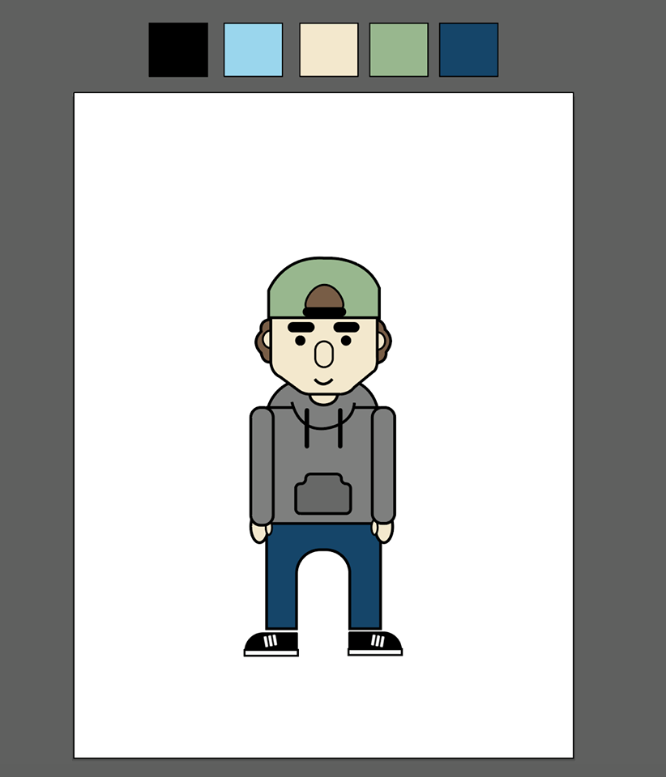

Indsæt link til færdig animation
Indsæt styletile
Med vores spil vil vi gerne fange modtagerens opmærksomhed, derfor har vi lagt fokus på at implementere ting fra en normal teenagers(13-15 år) hverdag. Endvidere vil vi opstille et muligt scenarie med et dilemma som netop vores målgruppe på 13-15 år kan relatere til. Vi har tænkt over at implementere emojis som en velkendt faktorer i vores spil, da vi mener at det er noget den unge generation benytter sig meget af. Derudover har vi tænkt over at bruge humor, samt en overdreven udtryksform som et væsentligt overordnet tema i vores spil. Det har vi valgt pga. det gør spillet/historien mere fængende og sjov, hvilket er med til at fange vores målgruppes interesse. Da vi skulle designe vores karakterer tænkte vi over at lave dem uden køn, da det lige så vel kan være piger der deler billeder som drenge. Det valgte vi dog at droppe, da vi mente at det ville gøre vores spil upersonligt. Derudover ville det have en negativ effekt på vores spil hvis karaktererne ikke var mennesker, da vores målgruppe dermed ikke ville kunne relatere på samme måde.
Går til karate, skilsmissebarn, er i gang med at blive undersøgt for ADHD. Har eget tv ved begge hans forældre, egen computer og iPhone 5, med apps som Facebook og Snapchat. Pga skilsmissen skiftede han skole sidste år, og savner hans venner fra den tidligere skole. Hans interesser tæller karate, snapchat og fritidsklubben, og hans yndlingsfag i skolen er dansk, håndværk og idræt.Hans mor vil have han skal søge job som opvasker så snart det er tilladt for ham, men han er ikke interesseret, da han selv synes han har nok at se til i hverdagen.
Bor med sine forældre der stadig er gift. Hendes interesser tæller maling og tegning, hvortil hun bruger Instagram til at dele hendes projekter. Hun går til fodbold, hvor hun er midtbanespiller på tredje år. Hun har haft en kæreste i to år nu, hvor meget af deres kommunikation ved afstand gøres via SnapChat og Messenger.
Ideen bag vores historie er at inkorporere humor i en seriøs debat, for at fortælle en vigtig pointe. Plottet omhandler vores hovedkarakter der skal foretage et valg; Han modtager et såkaldt ”nude-selfie”, potentiel hævnporno, og han har mulighed for at lade billedet være eller sende det være. Hvis han lader være og sletter billedet eller kontakter PrivatSnak.dk modtager han jubel, ros og god karma. Derimod hvis han sender det videre får det fatale konsekvenser for ham selv, hans veninde, hans venner og verdensfreden. Begge historier ender med at påpege man kan kontakte Privatsnak, med et budskab om uanset hvad, så er det altid en god ide at kontakte dem i en situation som dem. Der inddrages elementer fra skræmmekampagner, på baggrund af det emne vi arbejder med. Det skal tages seriøst og derfor er man nødt til at vise konsekvenser bag dumme beslutninger. Det antages at vi kan anvende humor, som letter tonen for animationen, og gør den mere tiltagende overfor vores ønskede publikum.
Indsæt karakterdesign
Indsæt layoutdiagram
Lydfiler
Indsæt test-dokumentation
Indsæt fotos af stand til fernisering
Organiseret liste over de billede- og lyd-filer der benyttes i projektet
Medlem 1 Medlem 2 Medlem 3 Medlem 4